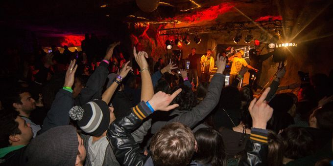

Dans les années 1960, le réseau souterrain parisien, connu sous le nom de grand réseau sud (GRS), devient un lieu fréquenté par des étudiants, notamment ceux des écoles situées à proximité, qui descendent dans ces galeries labyrinthiques. Les explorations et fêtes organisées sous le Val-de-Grâce, notamment dans l'espace préservé par les constructions de François Mansart, donnent naissance à la salle Z. Les célébrations évoluent au fil du temps, passant de récitals classiques dans l'ossuaire à des concerts de jazz, de rock et même à des rave-parties souterraines.
L'attrait croissant pour le GRS conduit à une surpopulation, avec de nombreux visiteurs inexpérimentés. Des styles de vie variés, tels que le rock, le baba-cool, ou le ska, se retrouvent sous terre. Cependant, des incidents surviennent, avec des témoignages de skinheads agressant des explorateurs. Les plaintes se multiplient, tant de la part des propriétaires que des cataphiles eux-mêmes, victimes de vols.
Depuis 1955, un arrêté municipal interdit l'accès aux carrières sans autorisation, mais l'activité illégale persiste. En 1981, l'Équipe de recherche et d'intervention en carrières (ERIC) est créée pour surveiller et réprimer l'activité cataphile. Bien que répressive, l'ERIC établit un certain dialogue avec les cataphiles et s'efforce de cibler principalement les touristes novices.
Dans les années 1980, l'Inspection générale des carrières tente de mettre fin à l'accès illégal au GRS en murant des accès et en injectant du béton pour bloquer certaines parties du réseau. Cette stratégie, malgré sa réussite apparente, suscite des problèmes de sécurité et d'humidité, obligeant l'Inspection à entretenir artificiellement la ventilation des catacombes. Malgré ces mesures, la cataphilie persiste, avec des passionnés qui continuent de créer des accès et d'explorer les galeries, constituant une communauté clandestine toujours active. Les motivations des cataphiles sont diverses, allant de l'histoire à l'exploration, malgré la nature illégale de leur pratique.
